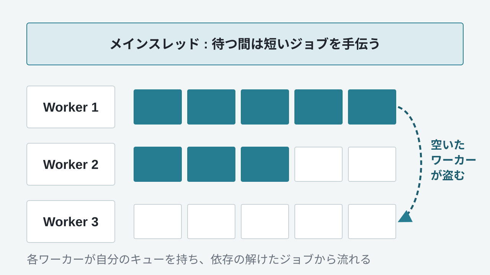

自作エンジン / 技術詳細
ジョブシステム
ワークスティーリングと依存関係つきのジョブで、処理を複数のスレッドへ分散する自作のジョブシステムです。
01
概要
ジョブシステムとは
処理を「ジョブ」という小さな単位に分け、複数のスレッドで同時に実行する仕組みです。ECS のシステムやボイドの計算、非同期の読み込みを支えています。ワーカーの数は、論理スレッド数から 5 を引いた数(最低 1)です。
02
動作動画
実際に動いている様子
03
仕組み
負荷の分け方

- ワーカーごとにキューを持ち、空いたワーカーがほかのキューから仕事を取るワークスティーリングで負荷を分散します。
- 先のジョブが終わると自動で流れる依存関係つきのジョブに対応しています。
- ジョブの実体は、ワーカーごとのプールをリング状に使い回します。
04
実装
工夫したところ
待ち時間を無駄にしない
- 待っているスレッドが、短いジョブを代わりに実行します。
- 読み込みのような長い処理はこの対象から外し、待っている側が長く戻れなくなるのを防いでいます。
ECS との連携
- システムの依存をジョブの依存へつなぎ、チャンクごとにジョブを発行します(ECS)。
ボイドの並列計算
- 前段のシステムが位置の写しを作り、進む向きの計算はその写しを読むジョブとして並列に走ります。
- ボイドは小隊に分け、近くの仲間を探す範囲を絞っています。
計測
- スレッドごとの稼働率と、仕事を取った(スティールした)回数を計測できます。
05
成果と計測
数字で見る
| 項目 | 値 |
|---|---|
| 並列に動かすボスの個体数 | 最大 4,000 体 |
| ワーカーの数 | 論理スレッド数 − 5(最低 1) |
動作確認環境 : Intel Core i7-14650HX(論理24スレッド)/ NVIDIA GeForce RTX 5060 Laptop GPU / メモリ 16 GB
06
主なコード
ソースの場所
Engine/JobSystem/Engine/JobSystem/Internal/JobWorker/JobWorker.cppEngine/JobSystem/Profile/ThreadProfiler.cppApplication/Systems/Boid/
07
参考資料
参考にした資料
ワークスティーリング
- Molecular Matters「Job System 2.0」(Molecular Musings)の実装を読み込み、ほぼそのままの形で移して作成しました。
基礎
08
ほかの技術を見る
自作エンジンの主な技術